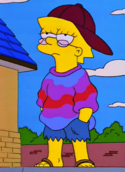

Lisa Simpson
Kuka on Lisa Simpson?
Lisa simpson on kuvitteellinen hahmo animaatiosarjassa
Simpsonit
Lisa on simpsonien perheen keskimmäinen lapsi. Lisa on kahdeksan vuotias,
mutta selvästi ikäistään kypsempi ja sarjan älykkäimpiä hahmoja.

Fig.1 - Lisa Simpson, Psyykkinen.
Hahmoja läpikäytynä:
20%
Muita hahmoja:
Bart Simpson